🎯 Hook – the hummingbird that beats 2600 times a minute
Slow-motion video of a hummingbird's wings gives an angular frequency of 272 rad s⁻¹. That is about 43 complete wing cycles every second, and roughly 2.6 × 10³ beats in a single minute — yet every one of those beats takes almost exactly the same time as the last.
That "same time every time" property has a name: the motion is isochronous. It is the property that made pendulums into clocks, and it is the first clue that a single simple model can describe oscillations as different as a wingbeat, a guitar string and the tides.
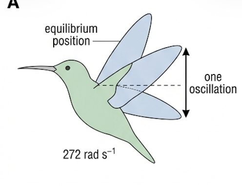
🔁 Oscillations, and why we model them with SHM
An oscillation is a regularly repeated backwards-and-forwards movement about the same central point, and along the same path — repetitive motion about a fixed point.
The importance of studying oscillations is clear from how wide the range of examples is. In physics and beyond, there are oscillations of: the planets around the Sun; the human heart; clocks (mechanical and electronic); engines and motors; atoms within molecules; musical instruments; human speech and the eardrum; waves on water; light and other electromagnetic waves; tides on the ocean; electric currents.
Simple harmonic motion (SHM) is a simplified theoretical model representing oscillations. It is the starting point for the study of all oscillations. In perfect SHM the oscillations always take the same time and there are no resistive forces, so they continue indefinitely with no loss of energy and constant amplitude. This time-keeping property is described as being isochronous.
📐 The six terms every SHM question uses
Although we talk about oscillating masses or objects, a discussion of perfect SHM often refers to a point mass, or a "particle".
Until a mass is displaced by a resultant force it stays at its equilibrium position, where the resultant force is zero. Once displaced, oscillations occur if there is always a resultant restoring force pushing or pulling it back towards equilibrium. The mass gains kinetic energy as it returns, passes through equilibrium because of its inertia, so the displacement is then in the opposite direction. Kinetic energy is transferred to some form of potential energy in the system, and when the kinetic energy has fallen to zero the mass stops and reverses. And so on.
A mass between two springs on a friction-free surface is a good visualisation. At all times the springs are stretched, but in part a the forces from the springs on the mass are equal and opposite. In part b there is a resultant force to the right. When released, the mass accelerates, reaches its greatest speed in the centre, then decelerates until it stops at B.
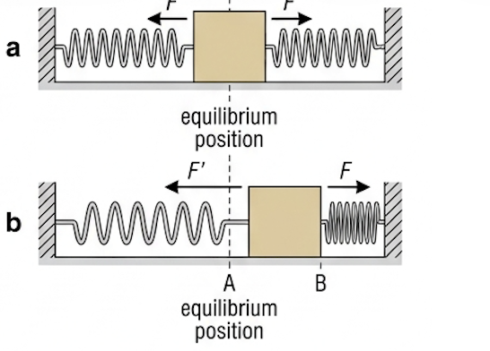
| Term | Symbol | Meaning and unit |
|---|---|---|
| Equilibrium position | — | Position in which there is no resultant force acting on the object |
| Displacement | \(x\) | Distance from equilibrium in a specified direction; a vector, varying continuously in size and direction. Unit: m |
| Amplitude | \(x_0\) | Maximum displacement while oscillating. Unit: m |
| Cycle | — | One complete oscillation: the mass returns to a certain position moving in the same direction. An object that oscillates is an oscillator |
| Time period | \(T\) | Time taken for one complete oscillation. Unit: s |
| Frequency | \(f\) | Number of oscillations per unit time (per second). Unit: hertz, Hz. 1 Hz means one oscillation per second |
| Angular frequency | \(\omega\) | Frequency expressed as an angle swept per second. Unit: rad s⁻¹ |
In the idealised case (SHM) with no energy dissipation the amplitude stays constant. More realistically, each oscillation has an amplitude less than the one before, assuming there is no driving force.
Time period and frequency provide exactly the same information; typically we prefer whichever is greater than one. Both remain constant for most practical oscillations (they are isochronous) even when the amplitude reduces because of energy dissipation. Because physics often deals with high frequencies, these units are in common use: kHz (10³ Hz), MHz (10⁶ Hz), GHz (10⁹ Hz).
🔄 The link between SHM and circular motion
Sometimes we describe circular motion as an oscillation, and frequency and time period should already be familiar from the circular motion sub-topic in A.2. Viewed from the side, motion in a circle has exactly the same pattern of movement as a simple oscillation.
Consider a particle moving in a circle at constant speed, and let point P be the projection of the particle's position onto the diameter of the circle. As the particle moves round, P oscillates backwards and forwards along the diameter with the same frequency as the circular motion, and with an amplitude equal to the radius, \(r\), of the circle. One complete oscillation of P is equivalent to the particle moving through an angle of \(2\pi\) radians.
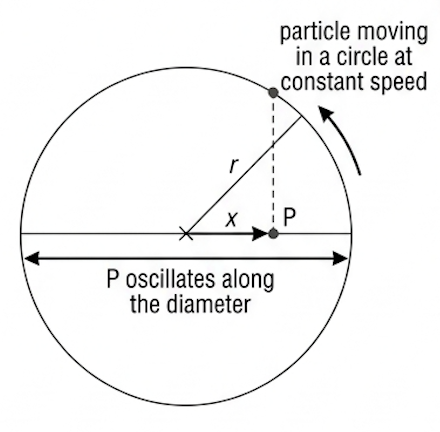
Angular velocity, \(\omega\), was introduced in A.2 for motion in a circle. Because of this close analogy, \(\omega\) is also central to the mathematics of SHM — but in the study of SHM it is called angular frequency, measured in rad s⁻¹.
Period, frequency and angular frequency are three different ways of representing exactly the same information.
🪀 Oscillator 1 — the mass–spring system
A mass–spring system and a simple pendulum are the two oscillators studied in every laboratory, for good reasons: the proportional relationships between force and displacement are easily understood; their periods are convenient to measure in a school laboratory; they are good approximations to SHM; energy is dissipated slowly, so oscillations continue long enough for accurate measurements; and they are starting points for understanding many similar but more complex oscillators.
The common arrangement is a mass hanging on a vertical spring. The force of gravity (the weight of the mass) also acts vertically, but it does not affect the results because it is constant — the system would have the same time period at a location with a different gravitational field strength.
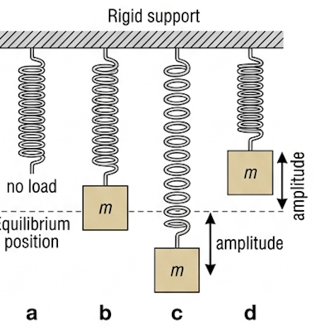
We assume the spring is never overstretched and that it obeys Hooke's law (Topic A.2): the size of the restoring force on the mass equals the spring constant multiplied by the displacement from equilibrium. The spring constant is a measure of the spring's stiffness (force / deformation).
Laboratory investigation is straightforward, especially using different masses on the same spring; different springs, or combinations of springs, with the same mass investigate the effect of \(k\) on the period. Modern setups use a position sensor below the mass, feeding an interface and computer so digital data can be collected and processed later — this is data logging.
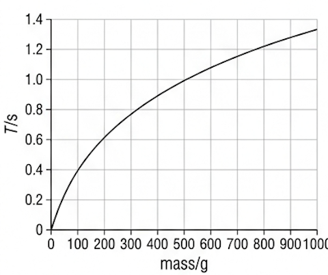
This equation applies perfectly only to a point mass acted on by a separate simple spring system that has a well-defined stiffness \(k\) and no significant mass. A very large number of other oscillating mechanical systems are similar to this model but much more complex — oscillations in buildings and bridges, for example. A simpler example is an oscillating ruler clamped at one end, in which the mass is spread uniformly along the oscillating system.
Inquiry 3 — concluding and evaluating. A student investigated an oscillating ruler, varying the mass by taping masses near its free end. She predicted that the time period could be found from the same equation as for a mass on a spring. Her raw data (uncertainties low):
| Mass on end of blade / g | Time period / s |
|---|---|
| 0 | too quick to measure |
| 40 | 0.55 |
| 80 | 0.76 |
| 120 | 0.91 |
| 160 | 1.04 |
| 200 | 1.15 |
⏳ Oscillator 2 — the simple pendulum
There are many designs of pendulum, all involving a mass swinging from side to side under gravity. A simple pendulum is the simplest possible model: a spherical mass swinging on a rod or string of negligible mass, from a rigid, frictionless support. The mass is often called the pendulum bob.
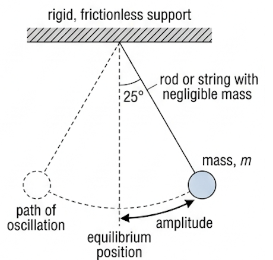
Because the mass is spherical and the rod or string has negligible mass, all the mass can be assumed to act as a point mass at the centre of the sphere. The displacement can be taken as the angle between the rod or string and the vertical. The restoring force is provided by gravity.
The weight, \(mg\), is conveniently resolved into two perpendicular components: a force \(mg\sin\theta\) provides the restoring force bringing the pendulum back towards equilibrium, and a force \(mg\cos\theta\) keeps the rod or string in tension. Looked at another way, only two forces act — tension and weight — and their resultant is the restoring force \(mg\sin\theta\).
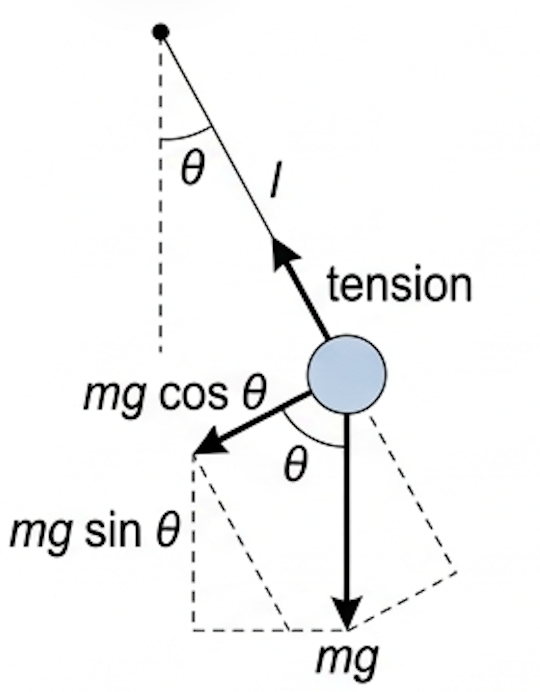
Practical investigations confirm that, for small amplitudes, the time period depends only on the length \(l\), measured from the point of support to the centre of mass. The period is not affected by the mass: doubling the mass also doubles the restoring force.
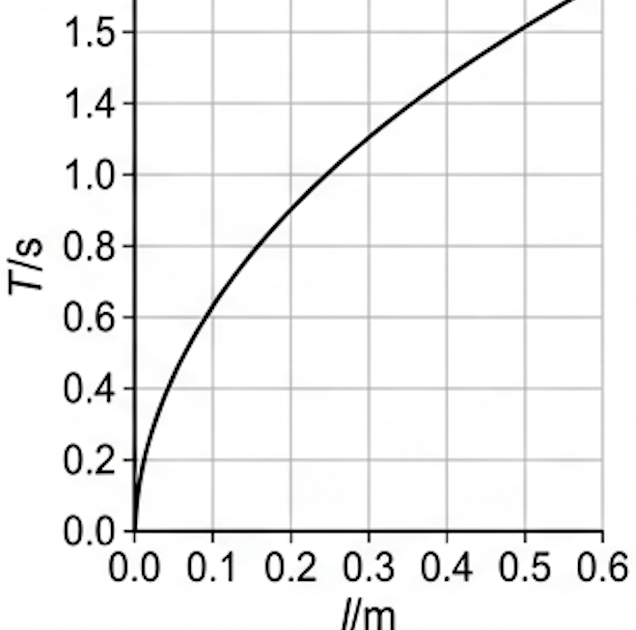
Tool 3 — approximation and estimation. For a pendulum to be a good example of SHM we need the restoring force \(mg\sin\theta\) to be proportional to the displacement \(\theta\). For very small angles the values of \(\sin\theta\), \(\tan\theta\) and \(\theta\) (in rad) are almost identical, so the condition is satisfied; as the angle increases the difference grows. Determine the minimum angle for which there is at least a 1% difference between \(\sin\theta\), \(\tan\theta\) and \(\theta\) in rad.
⚖️ The conditions that produce SHM — and the defining equation
SHM occurs if the restoring force, \(F\), is proportional to the displacement, \(x\), but the force always acts back towards the equilibrium position.
The negative sign is important: the force acts in the opposite direction to the displacement, so an increasing force opposes increasing displacement. For a mass on a spring obeying Hooke's law (\(F_{\text{H}} = -kx\)) this condition is obviously satisfied. For a simple pendulum the restoring force \(mg\sin\theta\) is almost proportional to the displacement angle \(\theta\), provided the angle is small.
To define SHM we refer to the motion rather than the force. Since \(F = ma\) for a constant mass, we can write:
Simple harmonic motion is defined as an oscillation in which the acceleration is proportional to the displacement, but in the opposite direction — always directed back towards the equilibrium position. A graph of restoring force against displacement looks similar to the acceleration–displacement graph.
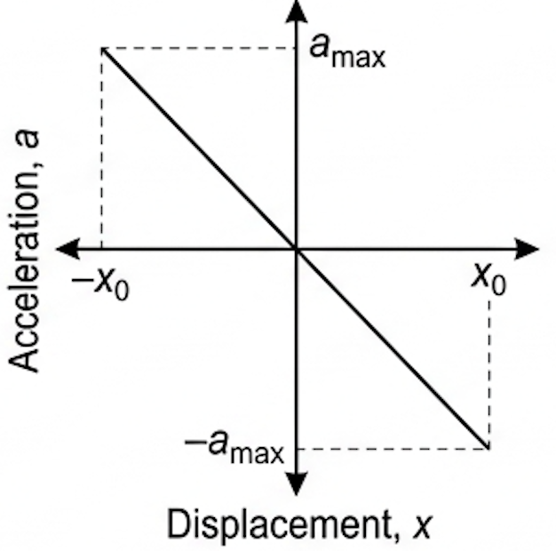
If the amplitude of an SHM is doubled, the restoring force and the acceleration also double. The mass then takes the same time for each oscillation, because it moves twice the distance at twice the average speed. This explains the defining feature of SHM: amplitude does not affect time period.
We can rewrite the definition as \(a = -\text{constant} \times x\). The constant must involve frequency, because the magnitude of the acceleration is greater if the frequency is higher; it can be shown to equal \(\omega^2\).
📉 Graphs of SHM
A mass oscillating on a spring can carry a marker pen that draws on a card pulled past it at constant speed. The record, or trace, produced is effectively a graph of displacement against time; data logging with an appropriate sensor improves the experiment. The waveform is described as sinusoidal — in the shape of a sine wave (usually equivalent to a cosine wave).
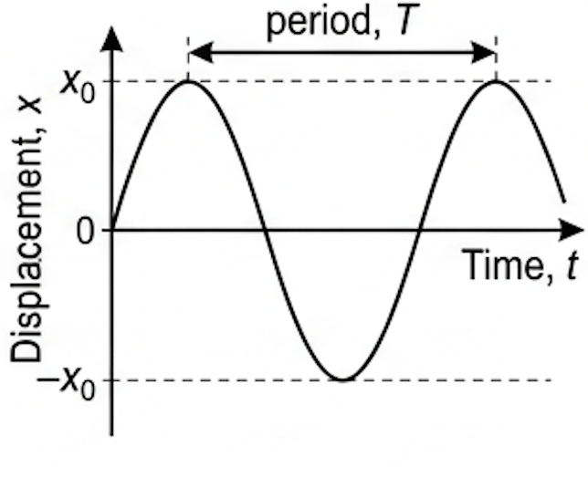
Using knowledge from A.2, the velocity at any moment is the gradient of the displacement–time graph, and the acceleration is the gradient of the velocity–time graph.
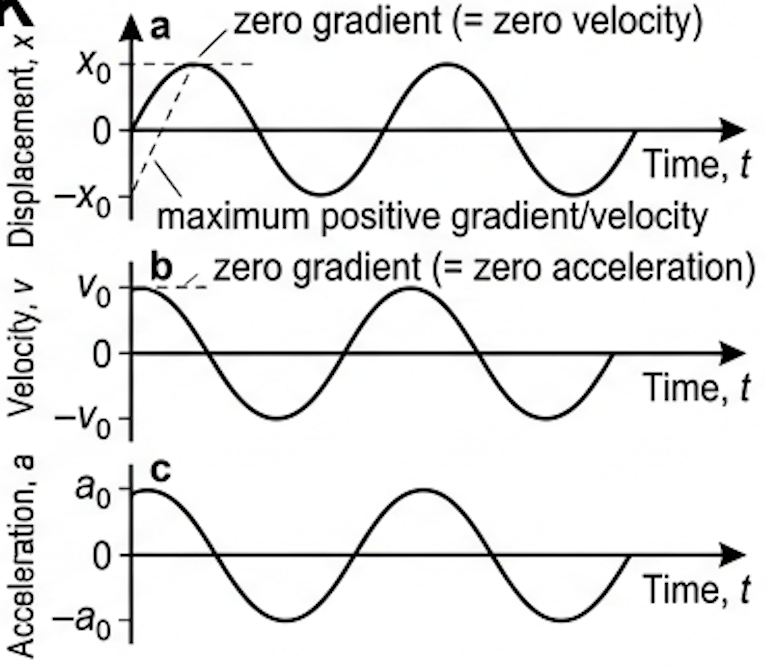
The velocity graph has its maximum value, \(v_0\), when the displacement is zero, and the velocity is zero when the displacement is at its maximum, \(\pm x_0\). The acceleration has its maximum value when the velocity is zero and the displacement is greatest — as expected, because when the displacement is greatest the restoring force, acting in the opposite direction, is greatest. All three graphs are sinusoidal, but their maximum values occur at different times.
🌀 Phase difference
Four children on identical swings all oscillate with the same frequency, because all the swings are the same length — but they are each at different points in their oscillations. We say they are out of phase with each other.
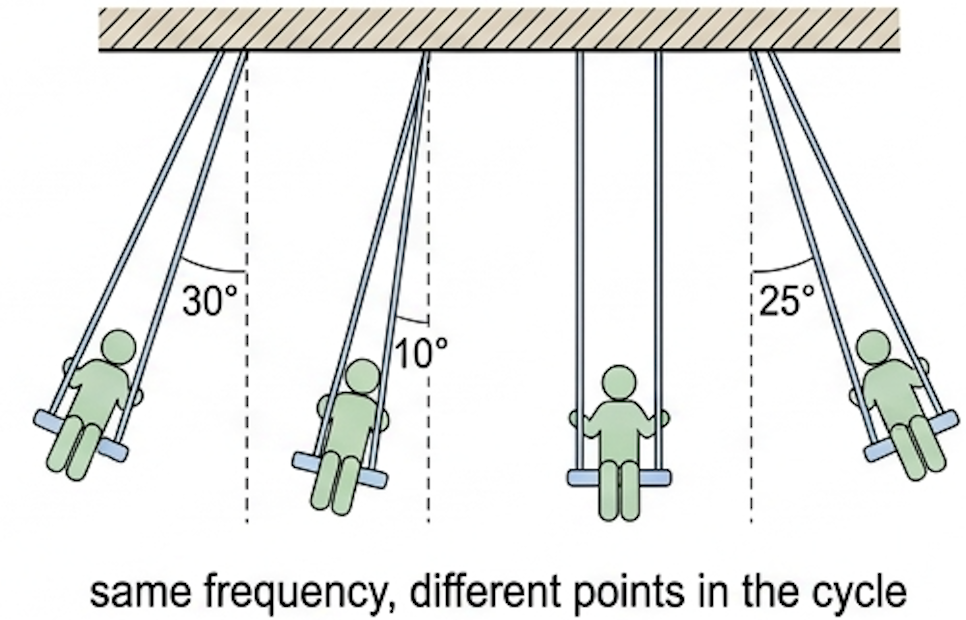
A phase difference occurs between two similar oscillations if they have the same frequency, but their maximum values do not occur at the same time. The three graphs of Fig 11 all have the same frequency and sinusoidal shape, but their peaks occur at different times.
This can be quantified as the fraction of a time period between the peaks. The first peak of the displacement graph occurs \(T/4\) after the first peak of the velocity graph; the first peak of the acceleration graph occurs \(3T/4\) after the first peak of the velocity graph. Since one complete oscillation is equivalent to \(2\pi\) radians, phase differences are more usually quoted in terms of \(\pi\).
| Fraction of a cycle | Phase difference | In degrees |
|---|---|---|
| \(T/4\) | \(\pi/2\) rad | 90° |
| \(T/2\) | \(\pi\) rad | 180° |
| \(3T/4\) | \(3\pi/2\) rad | 270° |
A phase difference of \(3\pi/2\) is equal in magnitude to one of \(\pi/2\), but in some circumstances we care which peak came first. Phase differences can be between 0 and \(2\pi\) radians. From Fig 11: there is a phase difference of \(\pi/2\) between displacement and velocity, and of \(\pi\) between displacement and acceleration.
📈 Graphs every examiner uses
| Graph type | Axes (X, Y) | Shape | What to read |
|---|---|---|---|
| Acceleration–displacement | \(x\) / m, \(a\) / m s⁻² | Straight line through the origin, negative gradient | Gradient \(= -\omega^2\); a straight line through the origin proves SHM |
| Displacement–time | \(t\) / s, \(x\) / m | Sinusoidal | Amplitude \(x_0\) from the peak, period \(T\) peak-to-peak; gradient gives \(v\) |
| \(T\) against \(m\) (spring) | \(m\) / kg, \(T\) / s | Curve of decreasing gradient from the origin | Not linear — must be linearised before use |
| \(T^2\) against \(m\) (spring) | \(m\) / kg, \(T^2\) / s² | Straight line through the origin | Gradient \(= 4\pi^2/k\), so \(k = 4\pi^2/\text{gradient}\) |
| \(T^2\) against \(l\) (pendulum) | \(l\) / m, \(T^2\) / s² | Straight line through the origin | Gradient \(= 4\pi^2/g\), so \(g = 4\pi^2/\text{gradient}\) |
| \(T\) against \(k\) | \(k\) / N m⁻¹, \(T\) / s | Decreasing curve, \(T \propto k^{-1/2}\), approaching but never touching either axis | Stiffer spring gives a shorter period for the same mass |
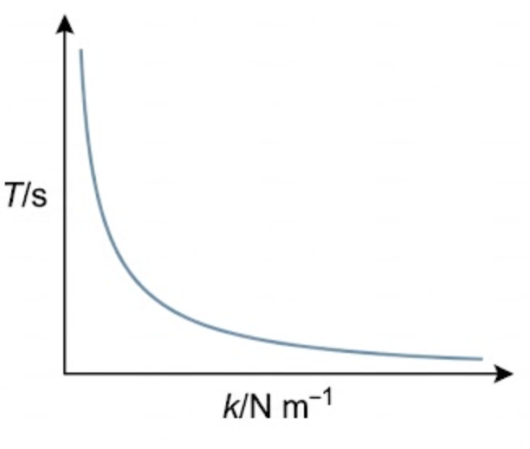
✍️ Worked example C1.1 – amplitude, displacement and frequency
The oscillating mass between two springs has a length of 12 cm and the distance between A and B is 18 cm. (a) Calculate the amplitude. (b) Determine the displacement when its end is in position B. (c) State when the mass has its greatest kinetic energy. (d) If the period is 1.5 s, calculate (i) the frequency and (ii) the angular frequency.
\(= 3\ \text{cm}\)
(d i) \(f = \frac{1}{T} = \frac{1.0}{1.5}\)
\(= 0.67\ \text{Hz}\)
(d ii) \(\omega = 2\pi f = 2\pi \times 0.67\)
\(= 4.2\ \text{rad s}^{-1}\)
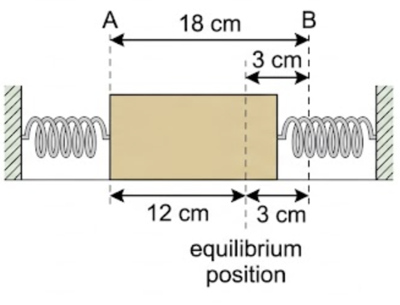
✍️ Worked example C1.2 – spring constant and frequency
A 200 g mass was placed on the end of a long spring and increased its length by 5.4 cm. (a) Determine the spring constant \(k\). (b) If the mass is displaced a small distance and undergoes SHM, calculate the frequency. (c) Suggest why oscillations of greater amplitude may not be simple harmonic.
\(0.200 \times 9.8 = -k \times (5.4\times10^{-2})\)
\(k = -36\ \text{N m}^{-1}\)
\(T = 2\pi\sqrt{0.200/36}\)
\(= 0.47\ \text{s}\)
\(f = 1/0.47 = 2.1\ \text{Hz}\)
✍️ Worked example C1.3 – the same pendulum on the Moon
Determine the time period of a simple pendulum of length 85.6 cm where the gravitational field strength is (a) 9.81 N kg⁻¹, (b) 1.63 N kg⁻¹ (on the Moon's surface). (c) The equation predicts that the ratio of the periods at two locations is \(\sqrt{g_1/g_2}\). Do the answers confirm that?
\(= 1.86\ \text{s}\)
\(T = 2\pi\sqrt{0.856/1.63}\)
\(= 4.55\ \text{s}\)
✍️ Worked example C1.4 – using \(a = -\omega^2 x\)
A mass oscillates horizontally between two springs with a frequency of 1.4 Hz. (a) Calculate its angular frequency. (b) Determine its acceleration when (i) its displacement is 1.0 cm to the right, (ii) its displacement is 4.0 cm to the left, (iii) it passes through its equilibrium position.
\(= 8.8\ \text{rad s}^{-1}\)
\(a = -(8.8)^2 \times (+0.010)\)
\(= -0.77\ \text{m s}^{-2}\)
\(a = -(8.8)^2 \times (-0.040)\)
\(= +3.1\ \text{m s}^{-2}\)
🕰️ Real-world: solving the problem of longitude
Galileo was the first to discover the constant time periods of pendulums, but the first pendulum clock came about sixty years later, in 1656, from the young Dutch scientist Christiaan Huygens. By the end of the eighteenth century the best pendulum clocks were inaccurate by less than one second a day, and they were the world's most accurate timekeepers for more than 250 years.
Accurate clocks were also essential for navigation. East–west distance (longitude) could be found from observations of stars or planets combined with the exact time of observation — but pendulum clocks were not designed to cope with the motion of a ship. The British government offered a valuable reward for a clock that stayed accurate at sea, and it was won by the clockmaker James Harrison, whose design used oscillating spheres on springs rather than a pendulum. Before pendulum clocks, most people did not know the time to the nearest hour.
🚀 HL Extension – how small is "small angle"?
SHM needs the restoring force \(mg\sin\theta\) to be proportional to \(\theta\). Writing the spring result as \(\omega^2 = k/m\) and the pendulum result the same way gives \(\omega^2 = g/l\), so both oscillators share the form \(a = -\omega^2 x\).
Expanding for small \(\theta\): \(\sin\theta \approx \theta - \theta^3/6\) and \(\tan\theta \approx \theta + \theta^3/3\), so the fractional errors grow as \(\theta^2\) — which is why the approximation fails suddenly rather than gradually.
Challenge: find the minimum angle at which \(\sin\theta\), \(\tan\theta\) and \(\theta\) differ by at least 1%. (Answer: \(\tan\theta\) is 1% above \(\theta\) at about 0.17 rad ≈ 10°; \(\sin\theta\) is 1% below \(\theta\) at about 0.24 rad ≈ 14° — so keep pendulum amplitudes under roughly 10°.)
⚠️ Trap corner – common mistakes
| Misconception | Correct view |
|---|---|
| Amplitude is the distance between the extreme positions | That distance equals twice the amplitude; amplitude is measured from the equilibrium position |
| Moving from one extreme to the other is one oscillation | That is half an oscillation; a cycle ends when the mass returns to a position moving in the same direction |
| A bigger amplitude means a longer period | Amplitude does not affect period: the force and acceleration scale with displacement, so the mass covers twice the distance at twice the average speed |
| A vertical mass–spring period depends on \(g\) | Weight is constant, so it shifts the equilibrium position but not the period; only \(m\) and \(k\) matter. The pendulum is the one that depends on \(g\) |
| Heavier pendulum bob, longer period | Period is independent of mass — doubling the mass doubles the restoring force too. Only \(l\) and \(g\) matter |
| Acceleration is zero at the extremes because the mass has stopped | At \(\pm x_0\) the velocity is zero but the acceleration is maximum, since the restoring force is greatest there |
| \(T\) against \(m\) or \(T\) against \(l\) should be a straight line | Both are curves; you must plot \(T^2\) to linearise and take a gradient |
Complete the statements:
✓ (a ii) 1 GHz = 10⁹ Hz, so 3.2 GHz
✓ (b) \(T = 1/f = 1/(3.2\times10^{9})\)
\(= 3.1 \times 10^{-10}\ \text{s}\)
\(= 1.23 \times 10^{3}\ \text{rad s}^{-1}\)
✓ (b) The frequency stays (very nearly) constant — the oscillation is isochronous, and frequency does not depend on amplitude
✓ The amplitude decreases
✓ because energy is dissipated from the string as sound and as internal energy, so the maximum displacement of each successive oscillation is smaller
✓ \(\omega = 2\pi/T = 2\pi/86400\)
\(= 7.3 \times 10^{-5}\ \text{rad s}^{-1} \approx 7\times10^{-5}\)
✓ (b) \(t = 100 \times 3600 = 3.6\times10^{5}\ \text{s}\)
✓ \(\theta = \omega t = 7.27\times10^{-5} \times 3.6\times10^{5}\)
\(= 26\ \text{rad}\)
✓ \(\omega = 2\pi \times 62.6\)
\(= 3.9 \times 10^{2}\ \text{rad s}^{-1}\)
\(= 43.3\ \text{Hz}\)
✓ beats in 60 s \(= 43.3 \times 60\)
✓ \(= 2.6 \times 10^{3}\) wing beats per minute
✓ \(m = (84 \times 1.0^2)/(4\pi^2)\)
✓ \(= 2.1\ \text{kg}\)
✓ \(\omega = 10\ \text{rad s}^{-1}\)
✓ A smooth decreasing curve, steep at small \(k\) and flattening as \(k\) increases, since \(T \propto k^{-1/2}\)
✓ The curve approaches but never touches either axis (it is not a straight line and does not reach zero) — see Fig 13
✓ \(= 16.4\ \text{s}\)
✓ (b) The large mass and large amplitude mean a very large energy store, while the resistive forces (air resistance on a compact bob, friction at the support) are small
✓ so the fraction of energy dissipated per oscillation is tiny and the amplitude decays very slowly
✓ (c) The plane of its swing slowly rotates relative to the building, which was the first simple laboratory demonstration that the Earth itself rotates
✓ \(\omega = 2\pi/T = 2\pi/1.42\)
\(= 4.4\ \text{rad s}^{-1}\)
✓ (b) \(T^2 = 2.0\ \text{s}^2\) at \(l = 0.50\ \text{m}\), so the gradient of \(T^2\) against \(l\) is about 4.0 s² m⁻¹
✓ gradient \(= 4\pi^2/g\)
✓ \(g = 4\pi^2/4.0 = 9.8\ \text{N kg}^{-1}\)
✓ \(k = (38 \times 9.8)/0.33\)
\(= 1.1 \times 10^{3}\ \text{N m}^{-1}\)
✓ (b) \(T = 2\pi\sqrt{38/1128}\)
✓ \(= 1.2\ \text{s}\)
\(\approx 4 \times 10^{4}\ \text{N m}^{-1}\)
✓ (b i) Taking the effective oscillating mass as roughly a quarter of the car, about 350 kg: \(T = 2\pi\sqrt{350/4\times10^{4}}\)
\(\approx 0.6\ \text{s}\)
✓ (any consistent estimate with stated assumptions earns the marks)
✓ (b ii) \(d = vT = 12 \times 0.6\)
\(\approx 7\ \text{m}\)
✓ (c) Without a damper the spring alone would keep oscillating for many cycles after every bump, because little energy is dissipated
✓ The damper dissipates that energy so the oscillation dies away in about one cycle, keeping the tyres in contact with the road and the ride comfortable; it also prevents large-amplitude resonance when bumps arrive at the natural frequency
✓ so \(T^2\) against \(m\) is a straight line through the origin
✓ of gradient \(4\pi^2/k\)
✓ hence \(k = 4\pi^2/\text{gradient}\); error bars of ± 0.05 s on \(T\) become \(\pm 2T\times0.05\) on \(T^2\), and the steepest and shallowest lines through the bars give the uncertainty in \(k\)
✓ Plotted against mass these lie on a good straight line
✓ but the line has a positive intercept of about 0.03 s² rather than passing through the origin
✓ so the prediction is not fully correct — with zero added mass the period is small but not zero (it was "too quick to measure")
✓ because the mass of the ruler itself oscillates and is distributed along the blade, adding an effective mass; the equation assumes a point mass on a massless spring
✓ and is always directed towards the equilibrium position: \(a = -\omega^2 x\)
✓ (b) Doubling the amplitude doubles the displacement at every equivalent point
✓ so the restoring force and the acceleration double, and the average speed doubles
✓ the oscillator covers twice the distance at twice the average speed, so the time for one cycle is unchanged
✓ Velocity: sinusoidal, peak \(v_0\) at \(t = 0\) where the displacement gradient is greatest, zero at \(t = T/4\) and \(3T/4\)
✓ Acceleration: sinusoidal, zero at \(t = 0\), maximum magnitude when displacement is \(\pm x_0\), always opposite in sign to displacement
✓ (b) displacement and velocity: \(\pi/2\) rad
✓ displacement and acceleration: \(\pi\) rad
✓ (c) Speed is maximum at the equilibrium position, where displacement and acceleration are zero
✓ Acceleration is maximum at the extremes \(\pm x_0\), where the speed is zero and the restoring force is greatest
✓ Many real systems are close approximations over small amplitudes — a pendulum below about 10°, a mass on a spring within its Hooke's law region
✓ so their periods can be predicted with the simple equations \(T = 2\pi\sqrt{l/g}\) and \(T = 2\pi\sqrt{m/k}\)
✓ and more complex oscillators (buildings, bridges, an oscillating ruler, atoms in molecules, greenhouse gas molecules) are then treated as modifications of the simple model rather than from scratch